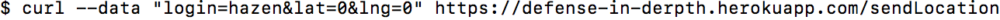

Security Report for "Not Foursquare"
Written by Hazen Breen
Introduction
Herein lies the Security Report of the Not Foursquare website. This website was created to serve as a testing environment for the security assessment abilities of the students of COMP 20 at Tufts University. The objective of this report is to describe the various security risks present in the Not Foursquare website. Using curl and extensive knowledge of Web Development, several serious risk factors have been identified. These risks are described within, along with recommendations on making the website secure in these specific problem areas.
Methodology
The central tool used to conduct this report was cURL, a command line tool to transfer data. Data was sent to Not Foursquare in various forms searching for vulnerabilities in the website. Several vulnerabilities were found that can be exploited using injections of data into the web application.
Abstract of Finding
Several security vulnerabilities were discovered on the Not Foursquare website. These include HTML insertion, XSS, and Cross-Origin Resource Sharing vulnerabilities. These security holes are a result of an excess of trust in client input. Client input is not screened, checked, or cleaned in any way, a fact which results in the website being modifiable by a potentially malicious client. These holes could result in the Not Foursquare website being changed in appearance or functionality. Currently, the website is too insecure to be on the web. By introducing some simple changes, the most glaring of these vulnerabilities can be patched.
Issues Found
-
HTML Injection Vulnerability
- Location: This problem lies in the login capabilities of the Not Foursquare web application. The login capability is present to users through the use of cURL. The vulnerability is specifically at https://defense-in-derpth.herokuapp.com/sendLocation.
- Description: Using cURL, I found this problem by attempting to access the login functionality of the web application. In order to log in, the website takes a string for the username and a latitude and longitude. The problem lies in the fact that the string for username is not sanitized in any way, allowing an attacker to input HTML that can access and change parameters of the site. Below is an example of a normal client's login information, followed by a malicious client's login information that would breach the Not Foursquare security and edit the HTML of the page.

- Proof: In the below screenshot, we can see that the website has been modified to display the string input that was inputted as a login username.

- Severity: High - This vulnerability opens the door for a malicious user to significantly alter the appearance and even the functionality of the Not Foursquare website. It would be possible to use this vulnerability to send personal data belonging to an innocent user to a hacker.
- Solution: The solution to this problem is to clean the login string as it is input into the website. Characters that are associated with this method of attack can be removed from any input string to prevent this attack. This can be done with the following codelogin = login.replace(/</g, "&lt;").replace(/>/g, "&gt;");which will make any tags into their HTML equivalent and thus, unable to create an HTML element.
-
XSS Vulnerability
- Location:This security breach originates from the login capabilities of the Not Foursquare web application. The login capability is present to users through the use of cURL at https://defense-in-derpth.herokuapp.com/sendLocation.
- Description: Using cURL, I found this problem by attempting to access the login functionality of the web application. In order to log in, the website takes a string for the username and a latitude and longitude. The problem lies in the fact that the string for username is not sanitized in any way, allowing an attacker to input a script that can access and change parameters of the site, which can be incredibly dangerous because from this access point a malicious client could access other user’s data. Below is an example of a normal client's login information, followed by a malicious client's login that would breach the Not Foursquare security by creating an alert displayed upon opening the webpage.
- Proof: In the below screenshot, we can see that the website has been modified to create a pop-up alert as specified by the script inputted as the login name.
- Severity: High - This vulnerability opens the door for a malicious user to significantly alter the functionality of the Not Foursquare website. It would be possible to use this vulnerability to send personal data belonging to an innocent user to a hacker. A malicious user has so much control once they breach this website that any data related to the site is vulnerable.
- Solution: The solution to this problem is the same as the solution to the HTML Insertion vulnerability. The solution is to clean the login string as it is input into the website. Characters that are associated with this method of attack can be removed from any input string to prevent this attack. This can be done with the following codelogin = login.replace(/</g, "&lt;").replace(/>/g, "&gt;");which will make any tags into their HTML equivalent and thus, unable to create an HTML element.
-
Cross-Origin Resource Sharing Vulnerability
- Location:The location of this security hole lies in the source code of the Not Foursquare website when the Access-Control Allow-Origin parameter is set to '*'.
- Description:Malicious users can attack the Cross-Origin Resouce Sharing vulnerability through making requests to the Not Foursquare website. This is because the Access-Control Allow-Origin allows access from any entity making a request ("*" means "all"). This means that any website can request, and more importantly recieve, data held on the Not Foursquare website. This setting is known as Cross-Origin Resource Sharing, which essentially dictates who the data on the website can be shared with.
- Proof: The following link leads to the Open Web Application Security Project's (OWASP) page on Cross-Origin Resource Sharing. OWASP is a renowned foundation dedicated to web security. The section linked to below describes the resulting security problems, such as the leak of sensitive data, that can occur when the Access-Control Allow-Origin parameter is set to '*'.
Link to OWASP
- Severity: High - This vulnerability is severe because it allows access to the entirety of the Not Foursquare website's data. The login names and Lat/Long of all users of the service can be stolen through this hole. This means that no user would be able to trust the web application with any data they wished to remain non-public.
- Solution:The fix for this vulnerability is relatively easy. The websites allowed to access the Not Forsquare data needs to be changed from everyone ("*") to only the website itself ("defense-in-derpth.herokuapp.com"). This will make it so the only website able to access this data is the Not Forsquare website.
Conclusion
A number of security vulnerabilities were found by this report on the Not Foursquare website. Those reported upon were HTML Insertion, XSS, and Cross-Origin Resource Sharing vulnerabilities. The web application Not Foursqare puts too much trust in user input and does not protect that data belonging to the website using appropriate methods. With some relatively simple fixes, these potential breaches can be patched. If left untouched, the current website is a major security risk to Not Foursquare and all users. The corrections listed above can be completed for a reasonable one-time fee. Going beyond this, re-developing the Not Foursquare website with security as the priority is advisable because a more determined malicious client has many more routes of attack than listed above. This can be done by hiring our services full-time.